Process
The process is a complete documentation of the proceedings that conspired throughout these 9 days of Lab Weeks. This includes a day by day report of both the groups' work as well as my contributions. Insights into the contributions (group and individual) and the ongoing products made were then also commented on. Feel free to experience the Lab Weeks yourself through my personal process.
— ★ —
These are my ongoing journal entries of these 9 gruelling days from 3 June 2019 to 14 June 2019. If you are more keen on other focal points, you can also peruse an in-depth look into the
product itself or revel in the detailed
reflection of the entire experience (from process to product).

Note: Journal entries might be subjected to subjective views but I shall attempt to remain impartial.
1
FINDING OUT OUR GROUPS. GETTING TO KNOW EACH OTHER. BRAINSTORMING IDEAS. CREATING THREE CONCEPTS.
MONDAY. 3 JUNE 2019.
I was ecstatic to find out that I got allocated my first choice of topic and started assembling with my group. Today, we spent the first hours with a kick-off briefing, finding out our group and getting to know each other a little. Other then being acquainted, I yearn to find out more about each other’s strengths so we would have roles to play accordingly. I found out that Hernan is a web developer and is proficient in programming. Other than this, it proved impossible as the group was eager to begin. As such, I initiated by sharing my research into Artificial Creatures. No one followed suit and I sensed that everyone were keen on brainstorming of the top of our heads. Hence, we began brainstorming ideas in the form of a mind map. Once we were satisfied with the quantity, we narrowed down the options to three ideas by means of stating our preferences. The three ideas we liked were a Venus flytrap, WALL-E and Dragons.

We further developed each of these concepts as well as started discussing about what set up and technologies could help us achieve these concepts. For instance, using leap motion to control drones that will provide a ‘dragon’ with flight. As we played around with the ideas more, the scales seemed to tip towards the Venus Flytrap idea. Eventually, we decided to bring over the idea of collecting trash from WALL-E to a Venus flytrap. Instead of catching flies, it catches trash.
Subsequently, we ordered some hardware from Tinytronics (battery pack, 360 servo motor and a 16 by 32 LED matrix) so we could tinker tomorrow. I felt the day could have went better as there was little order and direction, resulting in a less than optimal amount of progress made. At the end of the day, we thought that we should set aside time near the end of the day for planning the agenda of the next day whilst the progress is still fresh in our minds so that we can start promptly the next morning.
2
MAKING ROUGH SKETCHES OF THE IDEA. FACE DETECTION EXPERIMENTATION. PLAYING WITH SERVO MOTORS. EMOTIONS.
TUESDAY. 4 JUNE 2019.
Today began the incorporation of morning standups where we each discussed our progress and what needs to be done moving forward still. Additionally, we updated our scrum board with more specific tasks as we have some direction to head towards. Larissa and I made rough sketches of the design we have in mind. Hernan tried out face detection as we intend to sync it with the movement of our robot. We considered other options instead of locating an individual's face. Patrick played around with servo motors, trying to think of ways to make our robot move as intended. After which, we decided we needed pan-tilt brackets for that. Subsequently, we discussed and settled upon using its eyes and respective colours to show its emotions. We mapped out how the eyes will look per each emotion. Wendy did so for an angry expression while I did so for neutral, sad and happy.

Whilst sketching these, I started pondering animation possibilities using frames of the illustrated emotion. We received the hardware we ordered and it took a while but eventually, Hernan and Patrick figured out how to connect the Arduino to the LED matrix. As it seemed tedious, I initiated a cheat code of sorts where I jotted down the connections which came in handy in the next couple of days when a jumper wire comes loose. Next, the test codes for the LED matrix were a success and about time as the day was coming to a close. Earlier in the day, Hernan and Wendy felt that they would prefer to also have a digital version of the scrum board for personal use. Lastly, we decided it productive to add assignees and prioritization to each of our tasks on Trello which I executed, wrapping up our exploratory day. I was pleasantly satisfied with the productivity of the day, considering we are still in the elementary stages of our process.
+ GUEST LECTURE ON AR PROJECTS.
The guest lecture was Vincent Lindeboom from
Next Empire. He was energetic and inspirational. I liked that he also gave his own inspiration,
studio Moniker, which was indeed nice to check out. Additionally, he is recently enterprising in a pop-up DJ bar in Amsterdam's Westerpark called
Radio Radio. I really enjoyed this lecturer and his passion was contagious.
3
LINKING FACE DETECTION TO SERVO MOTORS. POSSIBILITY OF USING RED DOT DETECTION INSTEAD. PROJECT EMOTIONS TEMPLATE ONTO LED MATRIX. START COLLECTION OF BOTTLE CAPS / CAN TABS.
WEDNESDAY. 5 JUNE 2019.
Today is about trying to link the pan-tilt servo motors to the current face detection setup. As we are still uncertain about the effectiveness of the face detection (especially when it comes to detecting the closest person), we considered using red dot detection as an alternative. Also, I completed the illustrations of all the emotions I was tasked on a pixel grid, prepped by transferrence, but we still needed to find a way to project the illustrated emotions onto the RGB LED matrix.

Additionally, we should think about which colours best suit the various emotions as a group because currently, everyone has their own opinion on the matter. As Wendy initially thought it possible to use a software only available to Windows, which turned out to be a dead end, we were behind on this process. Sadly, I was unsuccessful in the transference of our illustrations to the LED matrix with the remaining two hours of the day. We will try again tomorrow. Additionally, Wendy initiated a collection of bottle caps and can tabs today. Soon becoming a habit, we carried out our daily stand-up at the start of the day and made plans for the next day towards the end.
+ GUEST LECTURE ON ROBOTS.
The guest lecture was
Joost Broekens (Phd) who is an assistant professor of Affective Computing at Leiden Institute of Advanced Computer Science (LIACS) of Leiden University, as well as a co-founder and CTO of
Interactive Robotics. Whilst his lecture was rather dry, he was incredibly knowledgeable about the field of robotics.
4
MAKING SHIT WORK. SERVO MOTORS AND FACE DETECTION COMBINATION MADE A SUCCESS. ARDUINO TO RGB LED MATRIX MADE A SUCCESS. BUYING MATERIALS TO BUILD THE STRUCTURE.
THURSDAY. 6 JUNE 2019.
Today was a day of successes. We made the pan-tilt servo motors work with face detecting as well as found a way to program our illustrations onto the LED matrix. More specifically, Patrick did and he was a life-saver! Finally! It was a tough and long process but the results were satisfying. Plus, we made a list of materials needed yesterday and added to it today. Next, we went to purchase the materials we could not salvage elsewhere. Last but not least, we were selected to present what we have so far at the end of the day. It was essentially our pan-tilt servo motors working in tune with the face detection program.

An increasing present issue that arise after the first day was that the Dutch students were gradually switching more and more to conversing in Dutch. While I do and can continue reminding them, it is an exclusive behaviour not going hand in hand with group collaboration. This is especially so when discussing in pairs (using Dutch) and settling on a decision without the consensus of others. This was frustratingly not ideal for group cooperation. Additionally, I have noted that when someone is not present (for tests, interviews and personal matters), they do not matter and are not kept appraised. This, for me, spells a serious lack of communication.
+ GUEST LECTURE ON COMMUNICATION PURPOSES.
The guest lecture was Teun Verkerk and he talked about technology used for communication purposes, specifically in the field of architecture. To be honest, this topic kind of went over my head as the idea of
Robot in Residence — introducing robotics to the construction industry did not appeal to me.
5
MAKING A PROMISE. CONSTRUCTION OF STRUCTURE FOR THE POT AND HEAD. TRANSFER ALL EMOTIONS WITH COLOUR INTO DISPLAY. UPGRADE FACE DETECTION TO A MORE RELIABLE (CLOSEST) SMILE DETECTION. UPDATE SCRUM BOARD.
FRIDAY. 7 JUNE 2019.
First things first, we made a proposition for our product that “we promise you recycling can be fun”. We started construction of the structure of our intended product. I would not have went with clay as the material of choice but this was one of the decisions made that I was not privy to. As such, it was especially important to get started on the clay for the pot today so that it can set over the weekend. We underestimated the amount of clay packets needed. We bought 10 and had to make another run to action for another 10. We agreed to go with paper mache over a balloon for the head because we are striving for lightweight. Larissa, Wendy and Patrick worked on the clay pot while I undertook the construction of the paper mache head.

Subsequently, the LED matrix needs to be fine-tuned to include the codes for all the emotions mapped out with their accompanying colours plus different frames for each to create a mini animation. Next, we wanted to link the change in emotions to face detection movement. For the happy emotion, we decided to use someone’s smile to make it appear. So now, we have to upgrade the face detection program to a smile detection one which Hernan is working on
+ GUEST LECTURE ON PLAYFUL INTERFACES.
The guest lecture was
Marcello Gómez Maureira. He is half of the magical duo Dandy Unicorns, working alongside Isabelle Kniestedt. His lecture was entertaining. I am not per se a video games or gamification person but he has me sold. Upon looking into
Dandy Unicorns, I am awe-spired by how they seamlessly combined coding, games and graphic design. I would like to do something like this in the future —taking a few of my interests and making it work.
6
FIX THE POT OF CRACKED CLAY. FIX THE PAPER MACHE HEAD. PONDER ON THE NECESSITY OF AN ACCOMPANYING POSTER. ADD THE STORAGE BIN AND STEM TO THE POT.
TUESDAY. 11 JUNE 2019.
Today was a hands-on day. When we first arrived, we realized the clay was cracked in multiple spots and the paper mache was bumpy and uneven. Everyone was unsure about how to counter these cracks or what was the best solution. I saw this as an opportunity and suggested the use of plaster. My reasoning is because plaster is low in cost, easy to apply and has fast drying / settling alternatives (which is crucial to take into account with our time crunch). They agreed and I made a run to Gamma to purchase the necessary supplies — a 2,5kilos of ‘snelgips’, a 5L bucket and an application tool. The plaster turned out to be a great patching material and was extremely fast drying but we once again underestimated the amount needed and Wendy and Larissa had to make a return trip to Gamma to get another 2 packets. In the meantime, I was trying to fix the groovy paper mache head. I first tried putting a few more layers on the balloon while Patrick blow-dried it. However, it did not help and was coming off at the edges. This is indicative of using a mixture that is too diluted. As we were out of white glue and I did not want to make impulsive or unnecessary purchases, I chatted up someone from another group who was also doing paper mache to enquire on their process and how it was going. I politely asked her if I could try using their solution instead, which was a mixture like that which is used for applying wallpaper. She was agreeable and happy to help as they had a whole bucket of it and its supply largely supersedes their demand for it. I was incredibly thankful as I needed to fix my head which it did. The need for an accompanying poster, to make the installation self-sufficient, is briefly discussed.

At the end of the day, Chris mentions that they will be collecting requirements the next day so there will be a consistent, plaque-like description corresponding to each and every installation present on the day. A fixed set of instructions to us will be given first thing tomorrow.
7
MAKE SOME PROGRESS WITH PROGRAMMING ITS FUNCTIONALITY. HAVE ITS PHYSICAL ATTRIBUTES MOSTLY SOLIDIFY. DECIDE ON A GROUP NAME AND A PRODUCT NAME. DECIDE ON REQUIREMENTS FOR OUR INSTALLATION AT THE EXPO. REVIEW SCRUM BOARD.
WEDNESDAY. 12 JUNE 2019.
I was charged with filling in the form in the morning. We had to decide our group and product name before lunch. I chose to bring in a little democracy with the method for doing so. This also makes decision-making more efficient and allows for everyone to have a say. Our group name is Pixel Leaf and our product name is Nom Nom. Patrikas had the winning group name and I came up with the preferred product name. This was decided through dotvoting where Larissa’s vote was omitted due to her absence. Plus, we submitted our requirements for the installation at the EXPO this Friday. The most exciting progress / development of today is the success in linking the smile detection programme with the LED matrix. Kudos Hernan! Essentially, the program first detects a face and lingers trying to detect a smile. When that happens, its neutral face changes to a happy face. When it does not detect a smile after a period of time, it changes to a sad emotion. The concept is when Nom Nom is happy, it opens its jaw, allowing users to throw bottle caps and can tabs into its mouth which will be recycled. Why this? Because existing recycling bins are no different than regular bins. Hence, we wanted to give it some personality. Users can also make a game out of this and aim it into the mouth from a slight distance.
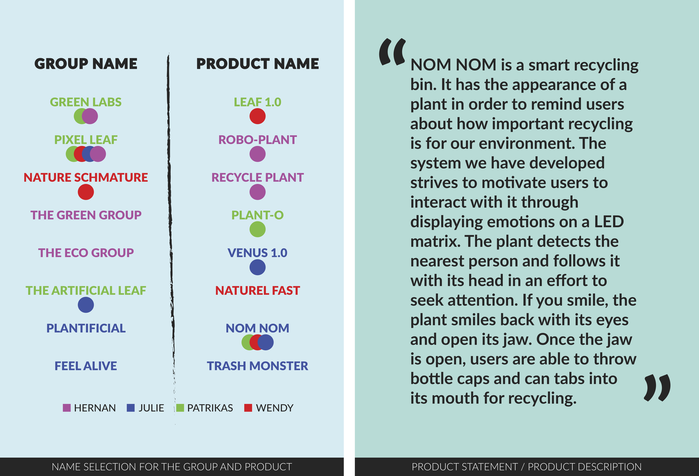
First thing in the morning, the pot structure was sandpapered to remove any jagged edges as well as to prep for the application of a coat of paint. In the afternoon, we attached the stem to the plate cover (for hiding its collection and wiring). Additionally, we needed to solidify the skeleton of Nom Nom, especially its head so we can better test the programming functionality. The heavy rain all day is not ideal / productive for sourcing out more supplies. We had to get more servos, the head structure (Patrick wants to go with metal netted domes as he felt that it would be easily to install the servos to), paint for the pot as well as paint for the head. I felt that the netted structure intended for use in constructing its head is not practical for paint alone to go on it. The others thought that we could find a solution after we have gotten the supplies. Towards the end of the day, I was tasked with creating a poster which I did not think was necessary anymore as it would be a repetition to that which would be provided to us by the teaching staff. Hence, I suggested I could make an instructions label instead.
8
ADD ANIMATIONS TO THE EMOTIONS. OMITTING TECHNOLOGIES BASED ON THE STRUCTURE. NO MORE SMILE DETECTION AND OPENING OF JAW. FIRMING UP HEAD STRUCTURE. BUYING OF LONG WIRES. SOLDERING. POSTER / INSTRUCTIONS.
THURSDAY. 13 JUNE 2019.
In the morning, the boys went to Gamma searching for long wires. However, they did not have the ones we needed. As such, the four of them left in a panic to go purchase long wires from Kiwi Electronics and returned after lunch with only three rolls. Whilst they were gone, I cut some wires and trimmed the edges (as we only had chicken wire) and used it to secure the head. It was wobbly and I manage to make it such that it needed considerable force to shift.

Animations for the emotions were scraped due to time limitations and the opening of its jaw was not possible as the servos we had were incapable of lifting what we thought to be light. It happens and we misjudged the probability of doing so. In hindsight, we should have researched or tested the weight load the servos can carry although we did not have the structure of the head ready. When they returned, I trimmed the rolls of wire into strips of 1.5meters long. We had to solder 16 wires to connect the computer to the arduino, servos and LED matrix. Patrick was struggling as he had incredibly shaky hands. I offered to do the soldering as I make a hobby out of tiffany glass art which involves soldering. Sure, it was with lead and glass but I am familiar with the technique and my hands are perfectly steady from a lifetime of drawing. I could have incredibly sped up the process but he felt that Larissa should have a go. I spent the rest of my day ammending the instruction label to suit the omissions and finalized it in the night.
9
SOLDERING. FURTHER OMISSION OF LED MATRIX. SETTING UP STRUCTURE FOR THE EXPO. HCI EXPO.
FRIDAY. 14 JUNE 2019.
In the morning, they continued with soldering while I went out on a run to make two copies of the instructions. Upon returning, I found out that the LED matrix is taken out because it was once again too heavy for the head and we did not have enough long wires. I suggested placing the LED matrix on the base on the stem (right next to the laptop) as the eyes need not be located at the anatomically correct position. However, Larissa unanimously insisted that long wires are still needed. I just felt it was a shame that Hernan's hardwork with linking the programs up was scraped but I suppose it is all part of the process.
 HCI Expo from 16:00 to 20:00.
HCI Expo from 16:00 to 20:00. Welcome talk by Chris was at 17:00. The expo actually went better than I anticipated, considering all the facets we had to omit in the end. Additionally, I was pleasantly content that it had endured through the four-hour EXPO. At the end of the day, I was exhausted to no end so I was relieved it was over but happy it happened.

P.S. All images used are taken by yours truly unless otherwise stated.
CLOSE PROCESS


 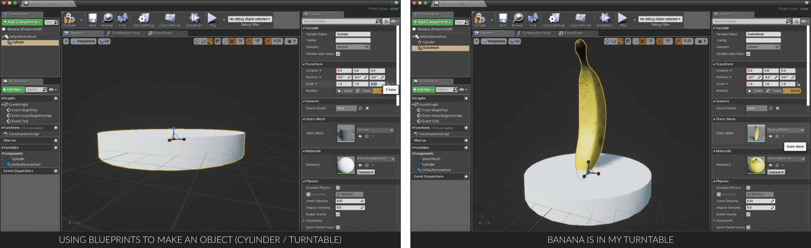
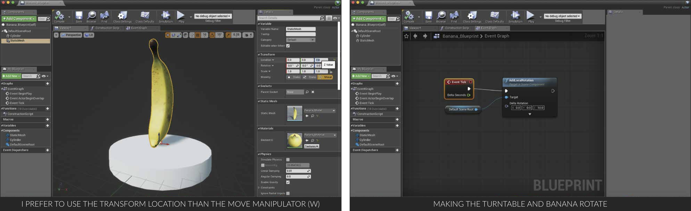
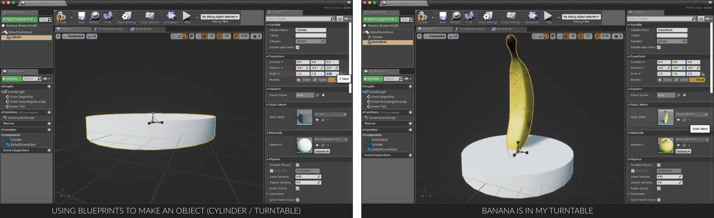
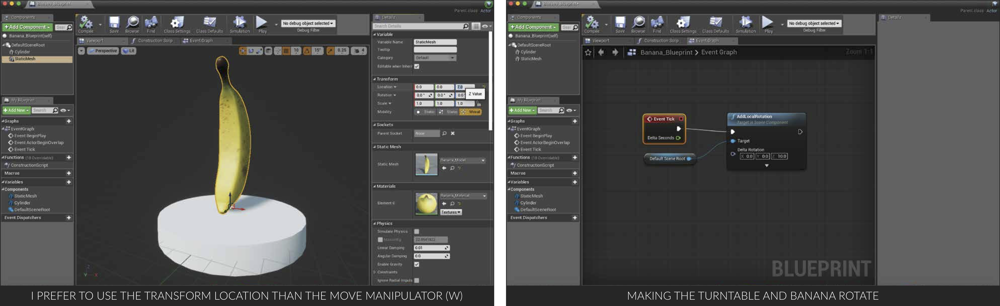

 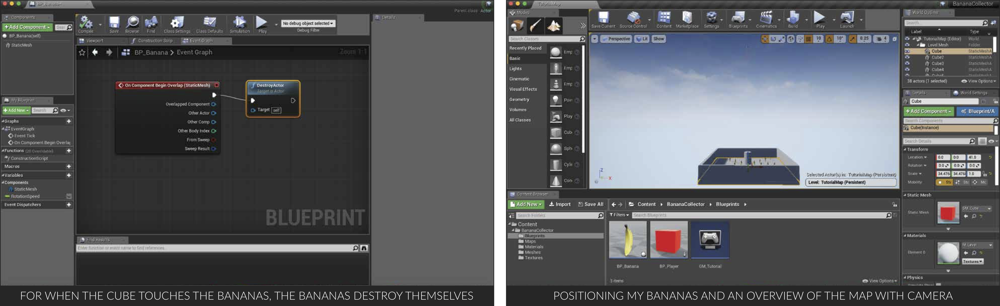
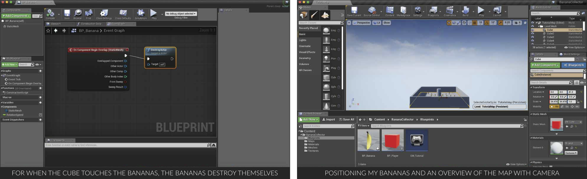


 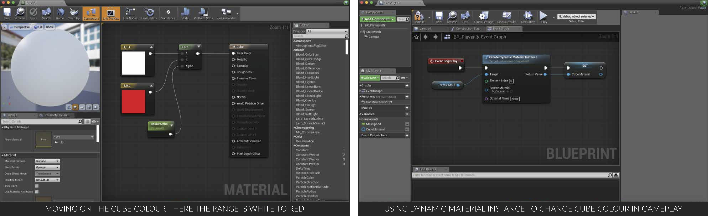
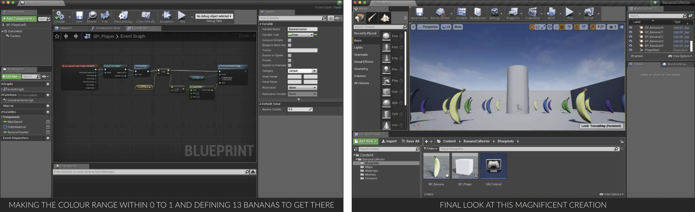
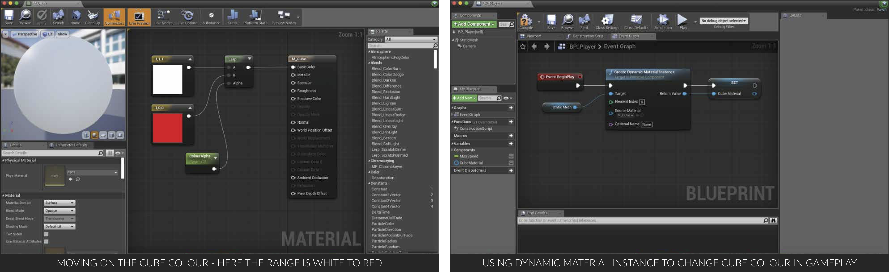
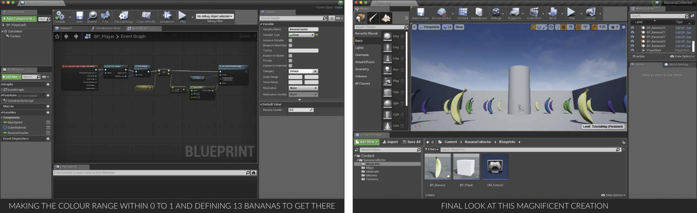